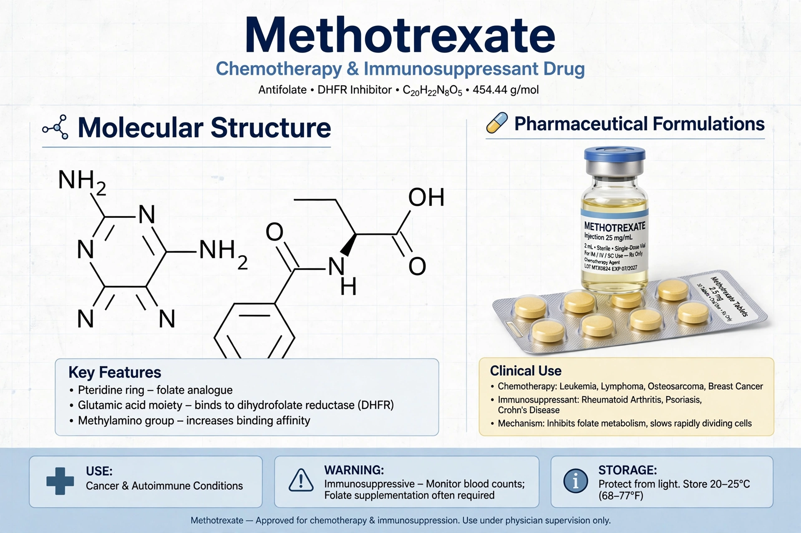

Methotrexate (MTX), formerly amethopterin, is an antimetabolite and antifolate drug used to treat cancer, autoimmune diseases and ectopic pregnancy, and to induce medical abortion. It is on the WHO List of Essential Medicines.

| Class | Antimetabolite; antifolate |
|---|---|
| Target | Dihydrofolate reductase |
| Routes | Oral, IV, IM, subcutaneous, intrathecal |
MTX competitively inhibits dihydrofolate reductase, blocking synthesis of tetrahydrofolate needed for purine and thymidylate synthesis, thus inhibiting DNA synthesis in rapidly dividing cells. Leucovorin (folinic acid) rescue can limit toxicity.
Hepatotoxicity, myelosuppression, mucositis, pneumonitis, teratogenicity — it must not be used in pregnancy except for ectopic/abortion indications. Weekly (not daily) dosing for arthritis is emphasised to prevent fatal errors. Folic acid supplementation reduces side effects.
Developed in the 1940s from Sidney Farber's work with folate analogues; aminopterin induced remissions in childhood leukaemia in 1948, and MTX produced the first cure of a solid tumour (choriocarcinoma, 1956, Li and Hertz).